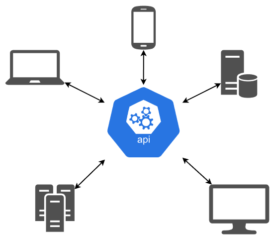
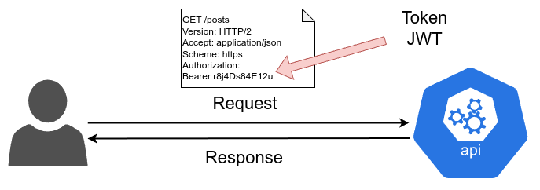
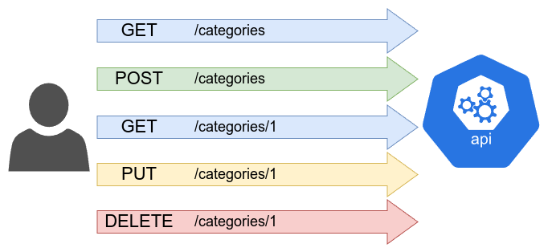

Une API REST est une API qui respecte les contraintes de l'architecture REST.
REST signifie Representational State Transfer.
Il s'agit d'un style d'architecture logicielle défini par Roy Fielding en 2000.
Il est possible de créer une API REST avec NodeJS et Express.
Une API REST doit respecter les contraintes suivantes :
Le client et le serveur sont séparés et communiquent via une API.
Cela permet de simplifier l'évolution de l'application.
Par exemple, il est possible de changer le serveur sans impacter le client.
Le serveur ne stocke aucune information sur le client.
Chaque requête doit contenir toutes les informations nécessaires au serveur pour comprendre la requête.
Cela permet de simplifier le développement du serveur.
Le serveur doit indiquer si les données peuvent être mises en cache ou non.
Cela permet d'améliorer les performances de l'application.
Le serveur doit fournir une interface uniforme pour toutes les ressources.
Cela permet de simplifier le développement du client.
Le client ne doit pas savoir s'il communique directement avec le serveur ou avec un intermédiaire.
Cela permet de simplifier l'évolution de l'application.
Le serveur peut envoyer du code au client pour étendre ses fonctionnalités.
Cela permet de simplifier le développement du client.
Swagger est un outil permettant de documenter une API REST.
Il est possible de générer automatiquement la documentation de l'API à partir du code.
Il est également possible de tester l'API directement depuis la documentation.
Pour utiliser Swagger avec NodeJS, il est possible d'utiliser le module swagger-autogen :
npm install --save-dev swagger-autogenIl faut ensuite créer un fichier swagger.js :
const swaggerAutogen = require('swagger-autogen')();
const doc = {
info: {
title: 'AmpsHero',
description: 'AmpsHero API',
},
host: 'localhost:8000'
};
const outputFile = './swagger-output.json';
const routes = ['./app.js'];
swaggerAutogen(outputFile, routes, doc);On peut ensuite ajouter une commande dans le fichier package.json :
"scripts": {
"swagger": "node ./swagger.js"
}Il est ensuite possible de générer la documentation avec la commande suivante :
npm run swaggerOn peut ensuite installer le package swagger-ui-express afin d'afficher la documentation générée :
npm install swagger-ui-expressOn peut ensuite modifier le fichier routes/index.js :
var express = require('express');
var router = express.Router();
const swaggerUi = require('swagger-ui-express');
const swaggerDocument = require('../swagger-output.json');
router.use('/', swaggerUi.serve);
router.get('/', swaggerUi.setup(swaggerDocument));
module.exports = router;Passport est un module permettant de gérer l'authentification dans une application NodeJS.
Nous allons l'utiliser conjointement à Mongoose pour gérer la sécurité de notre API :
npm install jsonwebtoken passport passport-jwt passport-local passport-local-mongooseJWT signifie JSON Web Token.
Il s'agit d'un standard permettant de créer des tokens d'authentification.
Il est possible de créer des tokens avec le module jsonwebtoken :
Il est possible de tester un token JWT depuis ce site : jwt.io
Il faut ensuite modifier le modèle User afin d'ajouter les champs nécessaires à l'authentification :
const mongoose = require('mongoose');
const {Schema} = mongoose;
const passportLocalMongoose = require('passport-local-mongoose');
const userSchema = new Schema({
// User properties
// Properties username, hash and salt will be auto-generated
});
userSchema.plugin(passportLocalMongoose);
const User = mongoose.model('User', userSchema);
module.exports = User;Il faut ensuite ajouter les variables d'environnement suivantes dans le fichier .env :
PORT=8000
JWT_SECRET=secretIl faut ensuite créer un fichier middlewares/passport.js :
const User = require("../models/User");
const passport = require("passport");
const passportJWT = require("passport-jwt");
const ExtractJwt = passportJWT.ExtractJwt;
const Strategy = passportJWT.Strategy;
const params = {
secretOrKey: process.env.JWT_SECRET,
jwtFromRequest: ExtractJwt.fromAuthHeaderAsBearerToken()
};
module.exports = function() {
const strategy = new Strategy(params, (payload, done) => {
User.findById(payload.id)
.then(user => {
if (payload.expire <= Date.now()) {
return done(new Error("TokenExpired"), null);
}
return done(null, user);
})
.catch(err => done(err, null));
});
passport.use(strategy);
return { initialize: () => passport.initialize() };
};Puis importer le middleware dans le fichier app.js :
const passport = require('passport');
const passportMiddleware = require("./middlewares/passport")();
const User = require("./models/User");
app.use(passportMiddleware.initialize());
passport.use(User.createStrategy());Il faut ensuite créer un fichier routes/auth.js :
const express = require('express');
const jwt = require('jsonwebtoken');
const router = express.Router();
const User = require("../models/User");
router.post("/register", async (req, res) => {
User.register(
new User({
email: req.body.email,
username: req.body.username
}), req.body.password, function (err, user) {
if (err) {
res.json(err);
} else {
res.json(user);
}
}
);
});
router.post("/login", async (req, res) => {
const {user} = await User.authenticate()(req.body.username, req.body.password);
if (user) {
const payload = {
id: user.id,
expire: Date.now() + 1000 * 60 * 60 * 24 * 7
}
const token = jwt.sign(payload, process.env.JWT_SECRET)
res.json({ token: token });
} else {
res.json({ error: 'Can\'t connect!' });
}
});
module.exports = router;Puis importer les routes dans le fichier app.js :
const authRouter = require('./routes/auth');
app.use('/auth', authRouter);Il sera ensuite possible de sécuriser une route en ajoutant le middleware passport.authenticate('jwt', { session: false }) :
router.get('/profile', passport.authenticate('jwt', { session: false }), (req, res) => {
res.json(req.user);
});Il est possible d'uploader des fichiers avec Express en utilisant le module multer :
npm install multerPlusieurs approchent peuvent ensuite être mises en place pour gérer l'upload des fichiers :
multipart/form-dataNous allons mettre en place la seconde approche avec une nouvelle route pour gérer les uploads de fichier en créant un fichier routes/uploads.js :
var express = require('express');
var router = express.Router();
const multer = require("multer");
const storage = multer.diskStorage({
destination: function(req, file, cb) {
cb(null, './public/uploads')
},
filename: function(req, file, cb) {
cb(null, file.originalname)
}
});
const upload = multer({storage: storage});
router.post('/', upload.single('file'), (req, res) => {
res.json({file: req.file});
});
module.exports = router;